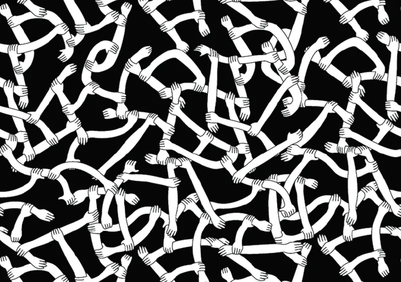

The trust gap
What a failed bank project taught me about the invisible architecture of organizations

Maybe Machiavelli was right.
This thought arrived uninvited one fall afternoon as I sat at a small desk overlooking Wall Street, surrounded by the quiet wreckage of a project I had believed in. My team had spent months building an internal chat tool for a global bank – something elegant and modest, designed to let ideas and people find each other across a complex institution. The technology had cooperated. The regulators had cooperated. All that remained was the humans.
They did not cooperate.
What the users actually told me
I went out and interviewed the employees before launch – traders, VPs, pricing managers, quants – and the feedback I received was not a list of feature requests. It was something quieter and more definitive: no one was going to use it. The tool was not broken; the organization was operating according to a different logic. Every employee, I came to understand, woke each morning and made the same silent calculation: sharing information was a liability. In a zero-sum environment, what you gave away could be used against you. The tool, by design, made sharing easier. That was not an advantage. It was a threat.
I went into triage mode – chasing symptoms, proposing fixes – until I finally accepted what the users had been telling me all along. The problem was not the software. It was something far older, embedded in the walls of the institution itself. And that something had a name.
The force that decides everything else
For years after that project, I found myself drawn back to the same question: why does collaboration work in some organizations and collapse in others? The answers I encountered in the literature were various – culture, incentives, leadership, org design – but they all seemed like symptoms of something more fundamental. Eventually I arrived at what I now believe is the correct diagnosis: trust.
Not trust in the greeting-card sense, nor in the sense of the vague cultural virtue that appears in every company's stated values. I mean trust as the Harvard-trained anthropologist Karen Stephenson defines it – with the precision the subject demands: the reciprocal exchange of information with others over time. Stephenson, whose career has been devoted to mapping the social architecture of institutions, and who has been praised for her work in publications ranging from The Economist to Wired, puts the stakes plainly: where trust exists, information moves quickly and freely; when trust is betrayed, information stops. And once stopped, it is nearly impossible to restart.
This definition is useful because it locates trust not in sentiment but in behavior – in the daily decisions about what to share, with whom, and on what terms. It also explains why scale makes everything harder. In a two-person relationship, trust is direct and relatively legible. Introduce a third person, and you have a network – which means, as Stephenson observes, at least one indirect link. And it is in the indirect links, she writes, "where all politics begins." Culture, in her framework, is simply a network of trust relationships; the org chart is the hanger on which it is draped. Hierarchy is the scaffolding. Trust – or its absence – is the building.

The species-level evidence
If Machiavelli diagnosed the worst of what we are, Yuval Noah Harari mapped something more interesting: the cooperative genius that distinguishes our species from every other. "Sapiens rule the world," he wrote in A Brief History of Humankind, "because we are the only animal that can cooperate flexibly in large numbers." The spacecraft, the internet, the global logistical web that makes the modern economy run – these are not achievements of individual brilliance. They are achievements of collective trust, extended across strangers, at a scale that would have seemed incomprehensible to any single human mind.
The organizational trust deficit affects 94 percent of companies with revenues above $5 billion, according to Bain & Company researchers. All of these companies name internal dysfunction, not competition, as their primary obstacle to growth. This is more than a management problem. It is a failure to deploy the most distinctive capacity our species possesses.
An EY survey sharpened the picture further: fewer than half of global professionals trust their employer, their boss, or even their immediate teammates. Less than half. In institutions that cannot function without cooperation, the majority of people are operating in a state of low-grade mutual suspicion. The tax this imposes – every decision slowed, every idea filtered, every collaboration hedged – is invisible in the quarterly numbers and devastating in aggregate.
What it takes to close the gap
Trust accumulates the way a reputation does: slowly, through consistency, fragile against a single betrayal. There is no shortcut, and no technology that substitutes for it. But there are practices that move the needle.
Leadership has to go first. Organizations are not democracies; the level of trust inside them follows, more than anything else, from what leadership actually models. Clear communication, visible accountability, promotions that reward trustworthiness rather than political skill, pay that registers as fair – these are not soft culture amenities. They are the structural conditions under which trust either grows or doesn't. The social contract between employees and management is written not in mission statements but in decisions.
Who gets promoted is a message. This signal cuts through all the others, and it is consistently underweighted. Trustworthiness tends to lose at promotion time to performance metrics, technical skill, and the capacity to navigate office politics – which means the lesson absorbed by every watching employee is precisely the wrong one. When the people who rise are the ones who play, the organization's stated values become decoration.
Flatten, and distribute the information. Siloed structures produce siloed thinking. When data and judgment concentrate in few hands, innovation slows to the speed of permission. The healthiest organizations I have encountered are the ones that treat emerging hierarchy as a problem to be solved rather than a sign of growth to be ratified.
Phatic communion is not small talk. Linguists use the term phatic communion for the apparently contentless exchanges that hold social fabric together – the hallway "hey," the thumbs-up on a colleague's post, the two-second acknowledgment that carries no information and all the information. These micro-signals keep communication channels alive between the moments when something genuinely important needs to travel through them. Their absence is not neutrality. It is the beginning of disconnection.
Give people a story worth believing in. Strategy documents do not inspire trust; shared stories do. The leaders who sustain trust over time are not necessarily those with the clearest data or the sharpest decks – they are the ones who can translate a strategic vision into a narrative that connects emotionally, that lends the day-to-day work a gravity beyond the quarter. According to analysis published in the Harvard Business Review, an inspired employee is 125 percent more productive than a merely satisfied one. That gap does not come from superior tools. It comes from meaning – which is, at its core, what trust in a larger purpose makes possible.
What Machiavelli got wrong
There is something seductive about the Machiavellian diagnosis: that power is the permanent operating system, that cooperation is always conditional, that the conference room and the Italian court are fundamentally the same institution wearing different clothes. It is not entirely wrong. Politics are inevitable at scale; Stephenson is clear on this, and so is experience.
But it is not the whole story. The same species that fills organizations with quiet calculation also built the systems that route emergency calls at 3 AM, mapped the human genome, and sent instruments beyond the solar system. None of those things happened because someone navigated politics skillfully. They happened because trust – extended across strangers, institutions, disciplines, and time – made genuine cooperation possible.
The trust gap inside any organization is not, finally, a structural inevitability. It is a choice, made daily, by the people at the top and then, in cascading consequence, by every person they influence. Closing it does not require a reorganization or a technology platform or a new set of stated values. It requires something simpler and harder: the willingness to go first.
Trust, as it turns out, is not a virtue we either have or don't. It is a practice – one that compounds, slowly and silently, in either direction.